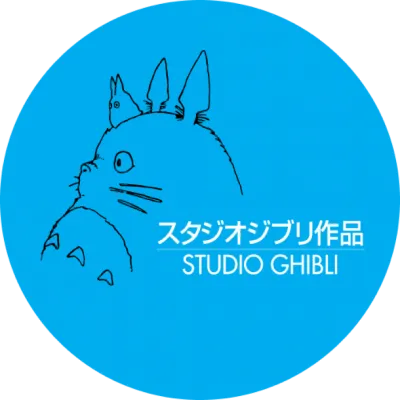

Festival
Découvrez un festival unique entièrement dédié aux films d'animation japonais. Situé à Andelnans, près de Belfort, il propose une expérience immersive avec des projections exclusives, dont certains films des Studios Ghibli adaptés aux enfants comme aux passionnés.
Original par son focus sur l'animation japonaise et son emplacement en dehors des grands centres comme Paris
le festival offre aussi des rencontres avec des professionnels du milieu, des ateliers pour découvrir les métiers de l'animation, et des stands créatifs en lien avec la culture japonaise
Venez explorer l'univers riche et créatif de l'animation japonaise !
Partenaire
